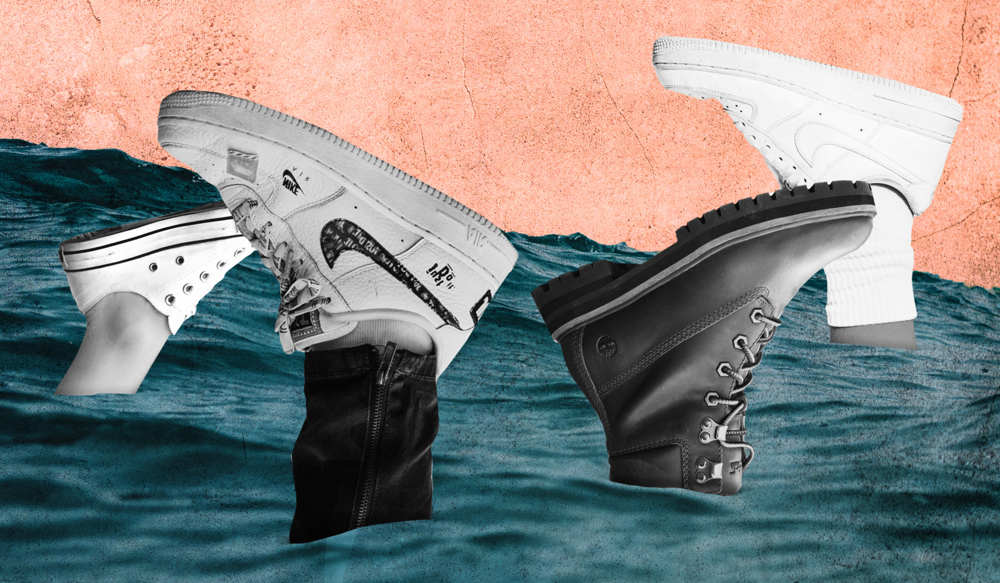

Since August 20, 2007, at least 20 detached human feet have been found on the coasts of the Salish Sea in British Columbia, Canada, and Washington, US. The first discovery, on August 20, 2007, was on Jedediah Island in British Columbia. Feet have been discovered on the coasts of islands in British Columbia, and in the US cities of Tacoma and Seattle.
A Canadian coroner's office said in December 2017 that they had ruled out foul play, and that the feet came from people killed either in accidents or by suicide, and the feet detached during the normal decomposition process. The feet were usually found in sneakers, which the coroner thought were responsible for both keeping the feet buoyant enough to eventually wash ashore, and gave them enough protection from decomposition to be found relatively intact. Prior to the recent seeming rash of feet washing ashore, there have been earlier instances going back more than a century, such as a leg in a boot that was found on a Vancouver beach in 1887. The most recent discovery was on January 1, 2019, when people on Jetty Island in Everett, Washington called police to report a boot with a human foot inside, which the coroner was able to match to Antonio Neill, missing since Dec. 12, 2016.
The series of discoveries has been called "astounding" and "almost beyond explanation", as no other body parts have turned up. The discoveries have caused speculation that the feet may be those of people who died in a boating accident or a plane crash in the ocean. One explanation is that some of the feet are those of four men who died in a plane crash near Quadra Island in 2005 and whose bodies have not been recovered, though one of the feet has been determined to be from a female. Foul play has also been suggested, although none of the first four feet showed tool marks.
